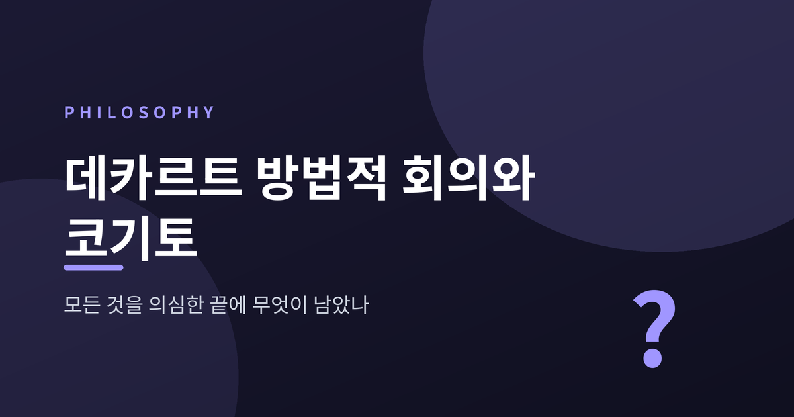
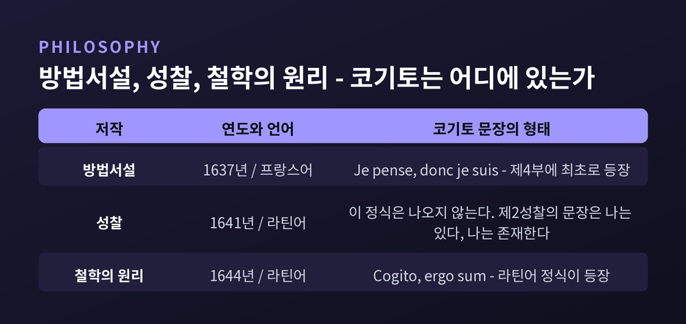
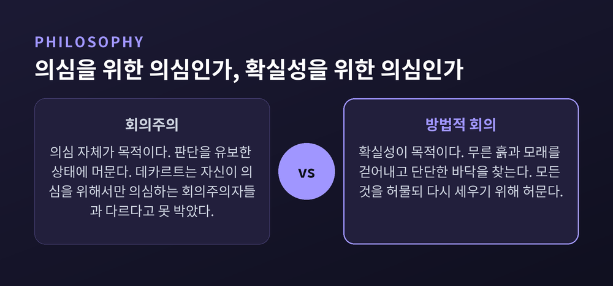
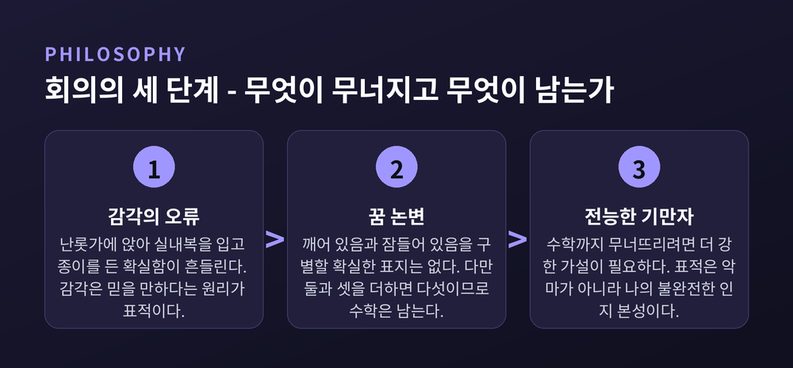
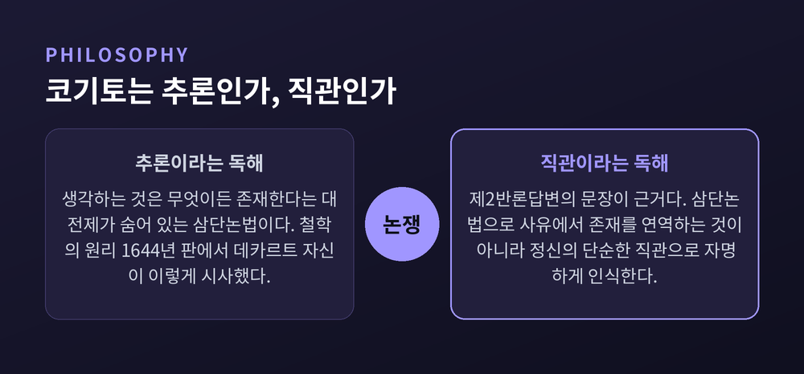
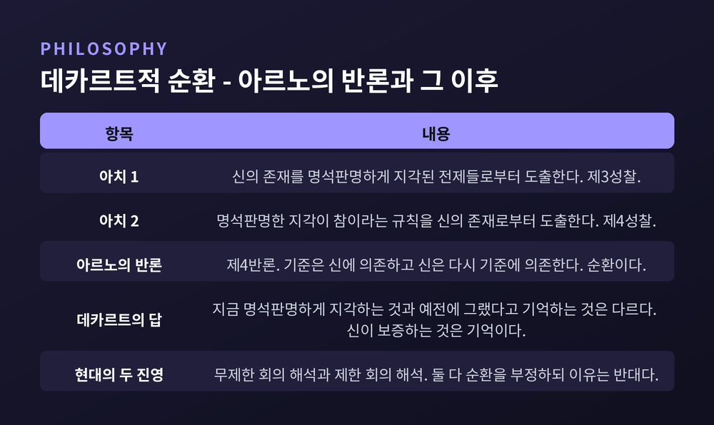
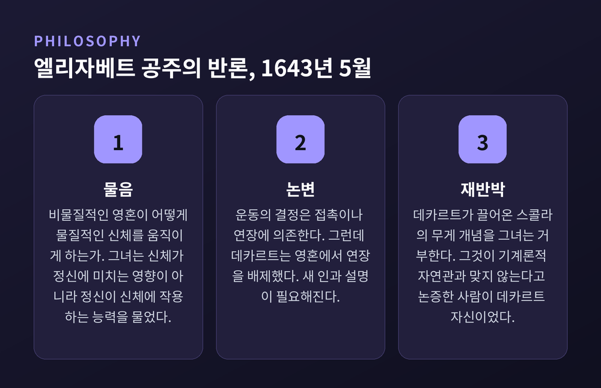

이번 글에서는 데카르트의 방법적 회의가 실제로 어떤 구조였는지 정리해 보겠습니다. 회의의 단계, 코기토를 둘러싼 오래된 논쟁, 명석판명이라는 진리 기준, 그리고 그 기준이 곧바로 부딪힌 순환 문제까지 차례로 따라가 봅니다. 마지막에는 데카르트가 끝내 풀지 못한 심신 문제와, 그가 남긴 것과 남기지 못한 것을 함께 살펴보겠습니다.
먼저 책 이야기부터 꺼내야 합니다.
1637년 『방법서설』은 데카르트가 처음 출판한 저작입니다. 마흔 살 무렵 그는 출판을 진행하려고 레이던으로 옮겼습니다. 이 책은 단독으로 나오지 않았습니다. 『굴절광학』, 『기상학』, 『기하학』 세 편의 시론을 붙여, 자기 방법이 어떤 성과를 내는지 직접 보여주는 방식이었습니다.
주목할 점은 언어입니다. 라틴어가 아니라 프랑스어로 썼습니다. 라틴어가 허용했을 것보다 더 넓은 독자에게 닿기 위해서였습니다.
1641년 『제일철학에 관한 성찰』은 성격이 다릅니다. 데카르트 자신이 1639년 메르센에게 "지금까지 쓴 것을 형이상학에 관해 명료하게 하려는 논고"라고 설명했습니다. 그는 메르센과 함께 일곱 세트의 반론을 모아 자신의 답변과 나란히 실었습니다. 초판에는 여섯 세트가, 1642년 재판에 일곱 번째가 추가됐습니다.
그러니까 『성찰』은 처음부터 논쟁을 몸속에 넣고 태어난 책입니다.
여기서 많은 분이 놀라시는 사실이 하나 있습니다. "나는 생각한다, 그러므로 나는 존재한다"라는 그 문장은 『성찰』에 나오지 않습니다. 프랑스어 원문 "Je pense, donc je suis"는 1637년 『방법서설』 제4부에 있고, 라틴어 "Cogito, ergo sum"은 1644년 『철학의 원리』에 있습니다. 『성찰』 제2성찰에 있는 것은 이 문장입니다.
"나는 있다, 나는 존재한다는 이 명제는, 내가 그것을 발언하거나 정신 속에 품을 때마다 필연적으로 참이다." (제2성찰, AT 7:25)

데카르트의 회의는 회의주의가 아닙니다. 이 구분이 전부라고 해도 지나치지 않습니다.
그는 『방법서설』 3부에서 자신이 "의심을 위해서만 의심하는 회의주의자들"과 다르다고 못 박았습니다. 목표는 확실성이었습니다. 무른 흙과 모래를 걷어내고 단단한 바닥을 찾는 일이었습니다.
제1성찰의 선언도 같은 결입니다. 모든 것을 완전히 허물고 토대에서부터 다시 시작한다. 그가 든 비유는 건축가였습니다. 모래땅 위에서 도랑을 파 내려가는 사람 말입니다.
방법에는 두 축이 있습니다.
하나는 토대주의입니다. 흔들리지 않는 제일원리 위에, 흔들리지 않는 추론으로 상부구조를 올립니다. 모델은 유클리드 기하학이었습니다. 실제로 그는 제2반론답변 말미에서 자기 논증을 정의, 요청, 공리, 명제라는 기하학 형식으로 다시 써 보이기도 했습니다.
다른 하나가 회의입니다. 유클리드의 공리는 감각의 사용과 부합해서 받아들이기 쉽습니다. 반면 형이상학의 제일원리는 감각에서 온 선입견과 정면으로 충돌합니다. 회의는 그 선입견을 치우는 도구였습니다.
방법에는 두 가지 특징이 있습니다.
첫째, 기준이 극단적입니다. 명백히 거짓인 것뿐 아니라 완전히 확실하지 않은 모든 것에 똑같이 동의를 유보합니다. "각각에서 적어도 의심할 어떤 이유를 찾기만 하면 충분하다"는 것이 원칙이었습니다.
둘째, 낱낱이 아니라 원리를 칩니다. 제7반론답변의 사과 바구니 비유가 이를 잘 보여줍니다. 썩은 사과가 섞였을까 걱정하는 사람은 하나씩 꺼내 보지 않습니다. 바구니를 통째로 엎고 성한 것만 다시 담습니다. 데카르트가 겨냥한 것도 개별 믿음이 아니라 "감각은 믿을 만하다" 같은 원리였습니다.
한 가지 오해도 풀어야 합니다. 방법적 회의는 실제로 안 믿는 상태를 요구하지 않습니다. 데카르트 자신이 세계의 존재를 "제정신인 사람이라면 진지하게 의심한 적이 없다"고 인정했습니다. 무너뜨리는 것은 믿음이 아니라 정당화입니다.

교과서가 정리하는 순서는 이렇습니다.
첫째, 감각의 오류. 제1성찰의 화자는 이렇게 앉아 있습니다. 난롯가에, 겨울 실내복을 입고, 손에 종이를 들고. 그 확실함이 다음 논변에서 흔들립니다.
둘째, 꿈 논변. 근거는 유사성입니다. 꿈의 경험은 가장 생생할 때 깨어 있는 경험과 질적으로 구별되지 않습니다. "깨어 있음과 잠들어 있음을 구별할 확실한 표지는 결코 없다"는 문장이 제1성찰에 있습니다.
셋째, 전능한 기만자. 나를 만든 것이 강력하고 악의를 가진 존재라면, 나는 가장 자명해 보이는 것에서도 틀릴 수 있습니다.
그런데 왜 세 번째가 필요했을까요. 꿈만으로 충분하지 않았기 때문입니다.
제1성찰은 물리학, 천문학, 의학 같은 경험 분과는 의심스러워져도 산술과 기하학은 다르다고 말합니다. 이유가 인상적입니다. "내가 깨어 있든 잠들어 있든, 둘과 셋을 더하면 다섯이고, 사각형은 네 변을 넘지 않는다." 수학은 꿈 논변을 통과해 살아남습니다. 그래서 더 강한 가설이 필요했습니다.
여기서 널리 퍼진 오독을 하나 짚겠습니다. 악한 정령 논변의 힘이 그 존재의 '전능함'에서 나온다는 생각입니다. 데카르트는 정반대 가정에서도 같은 결과가 나온다고 썼습니다. 나의 근원적 원인을 덜 강력한 것으로 만들수록, 내가 늘 속고 있을 만큼 불완전할 개연성은 오히려 커진다는 것입니다.
즉 이 논변의 진짜 표적은 악마가 아니라 나의 인지적 본성입니다. 제3성찰의 표현대로, 신은 "가장 자명해 보이는 문제에서조차 내가 속는 그런 본성"을 줄 수도 있었습니다. 연구자 캐리에로는 이것을 '불완전한 본성 회의'라고 부릅니다. 스탠퍼드 철학백과의 해당 항목도 이 명칭이 더 정확하다고 봅니다.
덧붙이면, 이 3단계 도식 자체도 절대적이지는 않습니다. 스탠퍼드 철학백과는 제1성찰을 그렇게 나누지 않고, 꿈 회의를 다시 둘로 쪼갭니다. 지금 꿈꾸고 있는가라는 물음과, 깨어 있다 해도 감각이 외부 대상에서 오는가라는 물음입니다. 앞의 것은 개별 경험의 신빙성을, 뒤의 것은 외부 세계 전체를 겨눕니다.

남은 것은 하나였습니다. 사유하는 동안 내가 존재한다는 사실입니다.
이 명제에는 까다로운 조건이 붙습니다. 1인칭이어야 하고, 현재시제여야 하며, 사유의 언어로 표현되어야 합니다. "나는 걷고 있으므로 존재한다"는 실패합니다. 다리는 여전히 의심 대상이니까요. 그러나 "나는 걷고 있는 것처럼 보이므로 존재한다"는 성립합니다.
중요한 점이 하나 더 있습니다. 코기토는 아직 실체적 자아를 주지 않습니다. 데카르트 본인이 제2성찰에서 인정합니다. "지금 필연적으로 존재하는 이 '나'가 무엇인지, 나는 아직 충분히 이해하지 못한다."
이제 오래된 논쟁입니다. 코기토는 추론입니까, 직관입니까.
직관 쪽 근거는 데카르트 자신의 말입니다. 제2반론답변에서 그는 이렇게 씁니다. 누군가 "나는 생각한다, 따라서 나는 존재한다"고 말할 때, 그는 삼단논법으로 사유에서 존재를 연역하는 것이 아니라 "정신의 단순한 직관으로 자명한 것으로서 인식한다."
그런데 추론 쪽 근거도 데카르트 자신에게 있습니다. 브리태니커의 정리에 따르면, 후기 저작인 1644년 『철학의 원리』에서 그는 코기토를 삼단논법의 결론으로 시사했습니다. 전제는 '그는 생각하고 있다'와 '생각하는 것은 무엇이든 존재해야 한다'입니다.
텍스트 안에 긴장이 있는 셈입니다.
스탠퍼드 철학백과의 조정안이 설득력 있습니다. 양자택일이라는 물음 자체가 잘못이라는 것입니다. 추론 구조를 가진 명제를 자명하게 파악하는 데는 아무 모순이 없습니다. 전건긍정식이 자명하다고 여겨지면서도 추론을 담고 있는 것과 같습니다. 어떤 진술이 추론을 포함한다는 사실이, 우리의 수용이 추론에 근거한다는 것을 뜻하지는 않습니다.
더 근본적인 반론도 있습니다. 러셀은 리히텐베르크를 따라 "'나'라는 단어는 실은 부당하다"고 말합니다. 데카르트는 "생각들이 있다"고만 말했어야 한다는 것입니다. '나'는 문법적으로 편리할 뿐, 어떤 소여도 기술하지 않는다는 지적입니다.

코기토는 하나의 사실이 아니라 하나의 기준을 낳았습니다.
제3성찰의 화자는 이렇게 묻습니다. 나는 내가 사유하는 것임을 확신한다, 그렇다면 어떤 것에 확신하는 데 무엇이 필요한지도 알고 있지 않은가. 답은 명석판명한 지각이었습니다. 그래서 규칙이 세워집니다. 내가 아주 명석하고 판명하게 지각하는 것은 무엇이든 참이다.
다만 데카르트는 여기서 "세울 수 있을 것 같다"고 썼습니다. 아직 최고 수위의 회의를 통과하지 못했음을 스스로 알고 있었던 것입니다.
명석은 애매함과 대조되고, 판명은 혼란과 대조됩니다. 『철학의 원리』의 설명대로, 개념은 덜 포함한다고 판명해지는 것이 아닙니다. 포함하는 것을 다른 모든 것과 주의 깊게 구별할 때 판명해집니다.
여기에 데카르트 인식론의 가장 인간적인 대목이 있습니다.
명석판명하게 지각하는 동안 우리는 동의를 거부하지 못합니다. 제5성찰의 표현으로 "그것이 참이라고 믿지 않을 수 없게" 되어 있습니다. 그런데 주의를 거두면 사정이 달라집니다. "나는 정신의 시선을 같은 것에 계속 고정할 수 없다." 논증에서 눈을 떼는 순간 남는 것은 판단의 기억뿐이고, 기억은 의심에 열려 있습니다.
지식에도 층위가 생깁니다. 데카르트는 무신론자인 기하학자도 삼각형 내각의 합을 "명석하게 인식"할 수 있다고 인정합니다. 그러나 그것을 참된 학지라고 부르지는 않습니다. 의심스럽게 만들 수 있는 인식은 지식이라 불릴 자격이 없다는 이유에서입니다.
그래서 신이 필요해집니다. 제3성찰과 제5성찰의 증명을 거쳐 기만하지 않는 신이 확보되고, 제4성찰에서 오류의 책임이 정리됩니다. 오류는 지성이 명석판명하게 이해하지 못한 것에 의지가 동의할 때 생깁니다. 의지가 지성을 넘어선 것이니, 잘못은 신이 아니라 우리에게 있습니다.
그런데 여기서 그 유명한 반론이 나옵니다.
앙투안 아르노가 제4반론에서 제기한 순환입니다. 데카르트는 명석판명한 지각에 의존해 신의 존재를 논증합니다. 그리고 신의 존재에 의존해 명석판명한 지각이 참임을 논증합니다. 브리태니커의 정식화가 간명합니다. 명석판명함이라는 기준은 신의 존재라는 가정에 의존하고, 그 가정은 다시 명석판명함이라는 기준에 의존한다.
데카르트의 답은 기억이었습니다. 제5성찰에서 자신이 신에게 요구한 것은 명석판명한 관념의 진리성이 아니라 기억의 신빙성이었다는 것입니다. 지금 눈앞에서 명석판명하게 지각하는 것과, 예전에 그랬다고 기억하는 것은 다릅니다.
현대 연구는 두 갈래로 나뉩니다. 과장적 회의가 코기토까지 포함해 모든 것을 무너뜨린다고 보는 '무제한 회의' 해석이 한쪽에 있습니다. 코기토와 몇몇 진리는 애초에 회의의 경계 밖에 있다고 보는 '제한 회의' 해석이 다른 쪽에 있습니다. 둘 다 순환을 부정하지만 이유가 정반대입니다.
한 가지는 분명합니다. 스탠퍼드 철학백과는 데카르트가 명백한 악순환에 빠졌다는 해석이 "학계 바깥에서 어디서나 가르쳐지지만 텍스트상의 근거가 없다"고 평가합니다. 그리고 이렇게 덧붙입니다. 악순환이라는 혐의를 피하는 것은 해석자의 일의 시작이지 끝이 아니라고.

이원론은 데카르트가 남긴 가장 오래된 유산이자 가장 오래된 골칫거리입니다.
제6성찰에서 정신은 사유하는, 연장되지 않은 것으로 규정됩니다. 신체는 연장된, 사유하지 않는 것입니다. 본성이 완전히 다르므로 하나는 다른 하나 없이 존재할 수 있습니다.
이 구도에는 이중의 이득이 있었습니다. 영혼 불멸에 대한 희망에 합리적 근거를 주고, 물질에서 정신성을 걷어내 기계론적 물리학의 길을 열어줍니다.
대가는 곧바로 청구됐습니다.
1643년 5월, 보헤미아의 엘리자베트 공주가 편지를 보냅니다. 물음은 단순하고 날카로웠습니다. 비물질적인 영혼이 어떻게 물질적인 신체를 움직이게 합니까.
그녀의 논변은 이렇습니다. 기존의 인과 설명은 인과적 효력을 연장에 묶어 둡니다. 운동의 결정은 접촉이나 연장에 의존하는데, 데카르트는 영혼에서 연장을 배제했고 접촉은 비물질적인 것과 어울리지 않습니다. 그렇다면 둘 중 하나를 해야 합니다. 심신 상호작용에 고유한 인과 설명을 제시하든지, 아니면 정신의 실체적 본성을 다시 규정하든지.
데카르트의 답변에 대한 스탠퍼드 철학백과의 평가는 냉정합니다. 회피적일 뿐 아니라 새로운 문제를 연다는 것입니다. 그는 스콜라의 '무게' 개념을 끌어와 설명하려 했습니다. 엘리자베트는 이를 거부합니다. 이유가 뼈아픕니다. 그 개념이 이해 불가능하고 기계론적 자연관과 맞지 않는다고 논증한 사람이 다름 아닌 데카르트 자신이었기 때문입니다.
그녀는 한 걸음 더 나갑니다. 신체의 나쁜 상태가 사고 능력에 영향을 준다는 사실을 지적하면서, 이런 사례들은 정신을 물질적이고 연장된 것으로 볼 때 더 직접적으로 설명된다고 시사합니다.
데카르트의 최종 답이 송과선이었습니다. 1649년 『정념론』, 그가 출판한 마지막 책에 담겨 있습니다.
흥미로운 것은 그가 먼저 이렇게 못 박았다는 점입니다. 영혼은 신체 전체에 결합되어 있으며, 다른 부분을 배제하고 어느 한 부분에만 있다고 말할 수 없다. 우리는 영혼의 절반이나 3분의 1을 생각할 수 없고, 신체 일부를 잘라내도 영혼은 작아지지 않습니다.
그럼에도 기능을 특별히 더 행사하는 부분이 있다고 그는 말합니다. 심장도 뇌 전체도 아닌, 뇌 물질 한가운데 있는 아주 작은 샘입니다. 이 샘의 미세한 움직임이 정기의 경로를 크게 바꾸고, 정기의 작은 변화가 다시 샘의 움직임을 바꿉니다.
후대의 표준적인 반박은 에너지 보존 법칙이었습니다. 비물질적 의욕이 물체를 움직인다면 보존 법칙이 깨진다는 것입니다. 다만 데카르트에게는 이 반박이 성립하지 않습니다. 그는 그 법칙을 몰랐습니다. 그렇더라도 어딘가 불편함은 느꼈던 듯합니다. 운동의 제3법칙을 진술하면서 그는 인간 정신이 물체를 움직이는 힘에 관해서는 여기서 탐구하지 않는다고 여지를 남겼습니다.
한 가지 덧붙이겠습니다. 엘리자베트를 단순한 질문자로 보면 곤란합니다. 데카르트는 1644년 『철학의 원리』를 그녀에게 헌정했고, 『정념론』은 애초에 그녀의 요청으로 쓰인 책입니다. 1645년 9월 편지에서 그녀는 "정념들을 더 잘 알기 위해 그것들을 정의해 달라"고 청했습니다. 그 요청이 한 권의 책이 됐습니다.

예전에는 데카르트를 확실성의 철학자로 읽었습니다. 지금은 반대로 읽는 편이 더 정확해 보입니다.
스탠퍼드 철학백과의 평가가 그렇습니다. 데카르트의 인식론적 혁신은 확실성이 아니라 의심 쪽에 있으며, 그의 방법론적 혁신은 파괴를 건설적 목적에 사용한 데 있다는 것입니다. 정당화의 근거를 모두 관념의 형태로 요구하는 '안에서 밖으로'의 전략도 그에게서 시작해 근대 초기 인식론의 표지가 됐습니다.
물론 한계는 분명합니다. 신의 성실성에 진리를 걸어 두는 구조는 오늘날 그대로 받아들이기 어렵습니다. 송과선은 실패한 답이었습니다. 엘리자베트가 던진 물음은 아직 해결되지 않았습니다.
흔히 '데카르트적'이라 불리는 것들이 정작 데카르트의 것이 아니라는 지적도 새겨둘 만합니다. 마음에 대한 무오류성이나 전지성 같은 교설은 그의 텍스트와 어긋납니다. '정신이 신체보다 더 잘 알려진다'는 논제도 비교급이지 최상급이 아닙니다. 그는 고통에 관한 내성적 판단조차 틀릴 수 있다고 인정했습니다.
정리하면 이렇습니다.
데카르트가 남긴 것은 답이 아니라 자세였습니다. 무너뜨릴 수 있는 것을 끝까지 무너뜨려 보고, 그러고도 남는 것에서 다시 시작한다는 자세 말입니다. 그가 세운 체계는 대부분 반박됐지만, 그 방법은 여전히 살아 있습니다.
"의심은 무너뜨리기 위한 것이 아니라, 남는 것을 확인하기 위한 것이다."
그가 옳았느냐고 물으신다면, 아니라고 답하겠습니다. 그가 물을 만한 것을 물었느냐고 물으신다면, 답은 달라집니다.